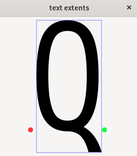

(update:2025/3/8)
グラフィック画面に表示する文字列の範囲の情報を取得します。
文字列の表示位置のx座標からのオフセット
文字列の表示位置のx座標からのオフセット
文字列の幅
文字列の高さ
続けて文字列を表示した場合のx座標のオフセット
続けて文字列を表示した場合のy座標のオフセット
TextExtentsの取得方法は次の通りです。
select_font_face()関数を実行して１フォントの種類,２フォントの斜体,３フォントを太字にするかどうかをを指定します。
set_font_size()関数を実行して文字列のサイズを指定します。
TextExtentsを取得する文字列をセットします。
get_text_extents()関数を実行してTextExtentsの内容を取得します。
| void Cairo::Context::get_text_extents( | const std::string & | utf8, | // utf8でコーディングされた文字列 |
|---|---|---|---|
| TextExtents & | extents ) | // フォントの斜体 |
#include <gtkmm.h>
#include <iostream>
class Drawing : public Gtk::DrawingArea {
public:
Drawing();
virtual ~Drawing() = default;
protected:
void on_draw(const Cairo::RefPtr<Cairo::Context>& cr, int width, int height);
};
Drawing::Drawing()
{
set_draw_func( sigc::mem_fun( *this, &Drawing::on_draw));
}
void Drawing::on_draw(const Cairo::RefPtr<Cairo::Context>& cr, int width, int height) {
double x, y;
Cairo::TextExtents te;
// 1.フォントの種類,傾斜,太字をセット
cr->select_font_face( "Sans", Cairo::ToyFontFace::Slant::NORMAL, Cairo::ToyFontFace::Weight::NORMAL );
// 2.フォントのサイズを指定
cr->set_font_size( 300.0 );
// 3.文字列をセット
Glib::ustring utf8 = "G";
// 4.TextExtentsを取得する
cr->get_text_extents( utf8, te );
x = 62.0;
y = 229.0;
// text_extents
std::cout << "width : " << te.width << std::endl;
std::cout << "height : " << te.height << std::endl;
std::cout << "x_bearing : " << te.x_bearing << std::endl;
std::cout << "y_bearing : " << te.y_bearing << std::endl;
std::cout << "x_advance : " << te.x_advance << std::endl;
std::cout << "y_advance : " << te.y_advance << std::endl;
// show text
cr->move_to( x, y );
cr->set_source_rgba( 0.0, 0.0, 0.0, 1.0 );
cr->show_text( utf8 );
// bounding box
cr->set_source_rgba( 0.0, 0.0, 1.0, 1.0 );
cr->set_line_width( 0.5 );
cr->rectangle( x + te.x_bearing, y + te.y_bearing, te.width, te.height );
cr->stroke();
// basic point
cr->set_source_rgba( 1, 0.2, 0.2, 1.0 );
cr->set_line_width( 5.0 );
cr->arc( x, y, 5.0, 0, 2.0 * M_PI );
cr->fill();
// advance point
cr->set_source_rgba( 0.0, 1.0, 0.2, 0.95 );
cr->set_line_width( 6.0 );
cr->arc( x + te.x_advance, y + te.y_advance, 5.0, 0, 2.0 * M_PI );
cr->fill();
cr->stroke();
}
class MyWindow : public Gtk::Window
{
public:
MyWindow();
protected:
Drawing my_draw;
};
MyWindow::MyWindow()
{
set_title( "text extents" );
set_default_size( 280, 320 );
set_child( my_draw );
}
int main(int argc, char* argv[]) {
auto app = Gtk::Application::create( "gtkmm4.example" );
return app->make_window_and_run<MyWindow>( argc, argv );
}
| TextExtents | |
|---|---|
| Console | Window |
|
$ width : 132 height : 268 x_bearing : 12 y_bearing : -222 x_advance : 150 y_advance : 0 |
 |